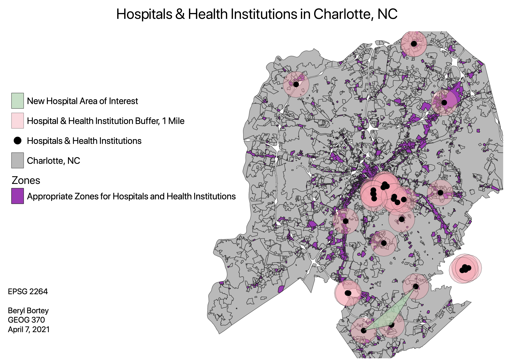

Homework 10: Vector Spatial Analysis
Beryl Bortey
What areas of Charlotte aren’t within 1 mile of a hospital or health institution?
Is the area of interest for the new hospital optimally located to address areas that don’t already have significant health care access?
I was interested in health care access and the distribution of hospitals and health institutions in Charlotte, North Carolina. I created a buffer around the points of hospitals and health institutions. This buffer represents the areas of Charlotte that are within 1 mile of a hospital or health institution. In addition to the buffer, I added a convex hull. There’s interest in building another hospital in South Charlotte. The convex hull boundary encompasses the existing hospitals in that particular area, and that also coincides with where they might construct another hospital.

Data used for this project
Hospitals/Health Institutions, Zoning, and Charlotte Data
Buffer GeoJSON
Convex Hull GeoJSON